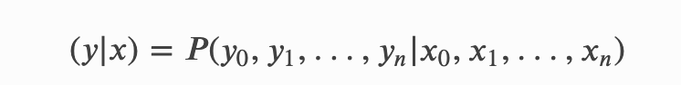
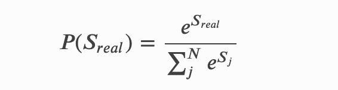
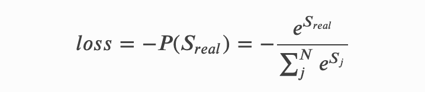
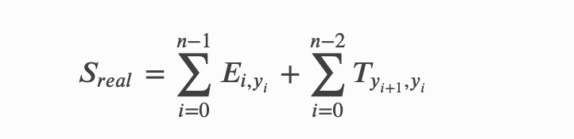
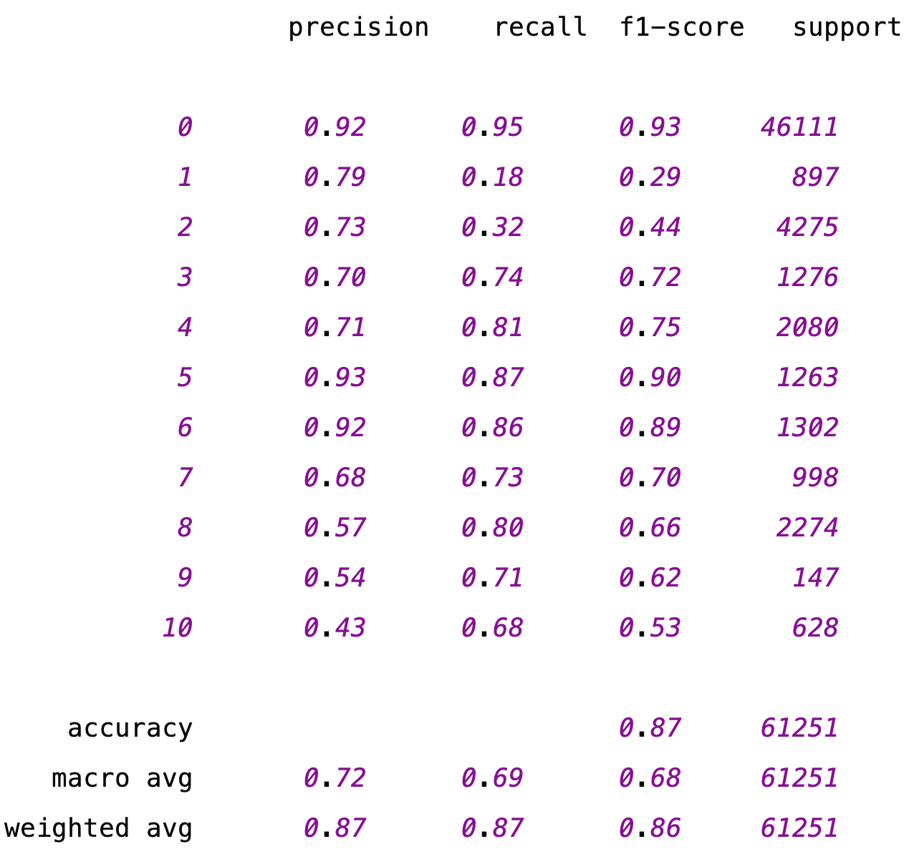

基于BiLSTM+CRF实现NER¶
学习目标¶
- 理解BiLSTM实现NER的原理
- 理解什么是CRF算法
- 掌握CRF的损失函数原理
1 BiLSTM+CRF模型介绍¶
-
BiLSTM+CRF模型的作用
BiLSTM+CRF: 解决NER问题 实现方式: 从一段自然语言文本中找出相关实体，并标注出其位置以及类型。 命名实体识别问题实际上是序列标注问题: 以中文分词任务进行举例, 例如输入序列是一串文字: “我是中国人”, 输出序列是一串标签: “OOBII”, 其中"BIO"组成了一种中文分词的标签体系: B表示这个字是词的开始, I表示词的中间到结尾, O表示其他类型词. 因此我们可以根据输出序列"OOBII"进行解码, 得到分词结果"我\是\中国人"。 序列标注问题涵盖了自然语言处理中的很多任务:包括语音识别, 中文分词, 机器翻译, 命名实体识别等, 而常见的序列标注模型包括HMM, CRF, RNN, LSTM, GRU等模型。 其中在命名实体识别技术上, 目前主流的技术: 通过BiLSTM+CRF模型进行序列标注。
-
数据标签（假定，具体情况根据业务）
B-Person （人名的开始部分） I-Person （人名的中间部分） B-Organization （组织机构的开始部分） I-Organization （组织机构的中间部分） O （非实体信息）
- 模型架构（图1）
- BiLSTM网络结构：
- 所谓的BiLSTM，就是(Bidirectional LSTM)双向LSTM. 单向的LSTM模型只能捕捉到从前向后传递的信息，而双向的网络可以同时捕捉正向信息和反向信息，使得对文本信息的利用更全面，效果也更好。
- 在BiLSTM网络最终的输出层后面增加了一个线性层，用来将BiLSTM产生的隐藏层输出结果投射到具有某种表达标签特征意义的区间
-
CRF网络结构：
- 从图中可以看到，在BiLSTM上方我们添加了一个CRF层。具体地，在基于BiLSTM获得各个位置的标签向量之后，这些标签向量将被作为【发射分数】传入CRF中，发射这个概念是从CRF里面带出来的，后边在介绍CRF部分会更多地提及，这里先不用纠结这一点。
这些发射分数（标签向量）传入CRF之后，CRF会据此解码出一串标签序列。那么问题来了，从上图最上边的解码过程可以看出，这里可能对应着很多条不同的路径，例如：
B-Person, I-Person, O, …, I-Organization
B-Organization, I-Person, O, …, I-Person
B-Organization, I-Organization, O, …, O
CRF的作用就是在所有可能的路径中，找出得出概率最大，效果最优的一条路径，那这个标签序列就是模型的输出。
- 总结一下：使用BiLSTM+CRF模型架构实现NER任务，大致分为两个阶段：
- 使用BiLSTM生成发射分数（标签向量）。
- 基于发射分数使用CRF解码最优的标签路径。
2 CRF原理¶
- 本小节将开始聚焦在CRF原理本身进行讲解，力图为大家展现一个清楚明白，基础本质的CRF。
2.1 线性CRF的定义¶
- 通常我们会使用线性链CRF来建模NER任务，所以本项目将聚焦在线性链CRF来探讨。那什么是线性链CRF呢，我们来看下李航老师在《统计学习方法》书中的定义：
设𝑋=[𝑥1,𝑥2,...,𝑥𝑛]，𝑌=[𝑦1,𝑦2,...,𝑦𝑛]；𝑋，𝑌均为线性链表示的随机变量序列，若在给定随机变量序列的𝑋的条件下，随机变量序列𝑌的条件概率分布𝑃(𝑌|𝑋)构成条件随机场，即满足马尔可夫性:
𝑃(𝑦𝑖|𝑋,𝑦1,...,𝑦𝑖−1,𝑦𝑖+1,...,𝑦𝑛)=𝑃(𝑦𝑖|𝑋,𝑦𝑖−1,𝑦𝑖+1) i=1,2,...,𝑛(在𝑖=1和𝑛时只考虑单边)；则称𝑃(𝑌|𝑋)为【线性链条件随机场】
- 同学们看到这个定义，或许会有些疑惑，但是不用着急，我们来探讨下这个定义。下图（图2）展示了一种经典的线性链CRF的结构图，从这张结构图来理解这个定义，主要包含两个点：
- 确保输入序列𝑋和输出序列𝑌是线性序列
- 每个标签𝑦𝑖的产生，只与这些因素有关系：当前位置的输入𝑥𝑖，𝑦𝑖直接相连的两个邻居𝑦𝑖−1和𝑦𝑖+1，与其他的标签和输入没有关系。
- 这样的定义，其实帮助我们减小了建模CRF的代价。
2.2 发射分数和转移分数¶
- 上边我们探讨了线性链CRF的定义以及它的一种经典图结构，接下来我们继续回到我们建模的命名实体任务上来。
-
在上图中，𝑥=[𝑥0,𝑥1,...,𝑥𝑖,...,𝑥𝑛]代表输入变量，对应到我们当前任务就是输入文本序列, 𝑦=[𝑦0,𝑦1,...,𝑦𝑖,...,𝑦𝑛]代表相应的标签序列
其中，每个输入𝑥𝑖均对应着一个标签𝑦𝑖，这一步对应的就是发射分数，它指示了当前的输入𝑥𝑖应该对应什么样的标签；在每个标签𝑦𝑖之间也存在连线，它表示当前位置的标签𝑦𝑖向下一个位置的标签𝑦𝑖+1的一种转移。
举个例子，假设当前位置的标签是”B-Person”，那下一个位置就很有可能是”I-Person”标签，即标签”B-Person”向”I-Person”转移的概率会比较大。
- 这里我们带出了建模CRF过程中两个重要的概念：发射分数和转移分数，下边我们来看看他们是什么。
2.2.1 发射分数¶
- 前边我们已经提到过发射分数了，即BiLSTM后产生的标签向量。下图（图3）以矩阵的形式展示了发射分数的生成过程。
- 当给定的文本序列𝑥=[𝑥1,𝑥2,𝑥3,...,𝑥𝑛]映射为对应词向量之后，将会得到一个shape为[𝑛,𝑒𝑚𝑏𝑒𝑑𝑑𝑖𝑛𝑔_𝑠𝑖𝑧𝑒]的词向量矩阵，其中每对应一个字词（样例只使用了4个词），例如𝑥0对应的词向量是[𝑒00,𝑒01,𝑒02,𝑒03]。
- 然后将𝑒𝑚𝑏𝑠传入BiLSTM后，每个词的位置都会产生一个上下文向量，所有的向量组合之后会得到一个向量矩阵𝑐𝑜𝑛𝑡𝑒𝑥𝑡_𝑣𝑒𝑐𝑡𝑜𝑟，其中每行代表对应单词经过BiLSTM后的上下文向量。
- 这里的每个位置的上下文向量可以用来指导当前位置应该输出的标签信息，但这里有个问题，这个输出向量的维度并不是标签的数量，它不能直接用来指示应该输出什么标签。一般的做法是在后边加一层线性层，将这个上下文向量的维度映射为标签的数量，这样的话就会生成前边所讲的标签向量，其中的每个元素分别对应着相应标签的分数，根据这个分数可以用来指导最终标签的输出。
- 具体地，线性层这里只是做了这样的一个线性变换：𝑦=𝑋𝑊+𝑏，显然，这里的𝑋就是𝑐𝑜𝑛𝑡𝑒𝑥𝑡_𝑣𝑒𝑐𝑡𝑜𝑟， 𝑦是相应的𝑒𝑚𝑖𝑠𝑠𝑖𝑜𝑛_𝑠𝑐𝑜𝑟𝑒，𝑊和𝑏是线性层的可学习参数。 前边提到，𝑐𝑜𝑛𝑡𝑒𝑥𝑡_𝑣𝑒𝑐𝑡𝑜𝑟的shape为[𝑛，𝑐𝑜𝑛𝑡𝑒𝑥𝑡_𝑠𝑖𝑧𝑒]，那么线性层的𝑊的shape应该是[𝑐𝑜𝑛𝑡𝑒𝑥𝑡_𝑠𝑖𝑧𝑒,𝑡𝑎𝑔_𝑠𝑖𝑧𝑒]，经过以上公式的线性变换，就可以得到发射分数𝑒𝑚𝑖𝑠𝑠𝑖𝑜𝑛_𝑠𝑐𝑜𝑟𝑒，其中每个字词对应一行的标签分数（图中只设置了三列，代表一共有3个标签），例如，𝑥0对第一个标签的分数预测为𝑡00，对第二个标签的分数预测为𝑡01，对第三个标签的分数预测为𝑡02，依次类推。
2.2.2 转移分数¶
- 下面我们来聊聊转移分数，这个转移分数表示一个标签向另一个标签转移的分数，分数越高，转移概率就越大，反之亦然。下图（图4）展示了记录转移分数的矩阵。
让我们从列到行地来看下这个转移矩阵𝑇，B-Person向I-Person转移的分数为0.93，B-Person向I-Organization转移的分数为0.02，前者的分数远远大于后者。I-Person向I-Person转移的概率是0.71，I-Organization向I-Organization转移的分数是0.95，因为一个人或者组织的名字往往包含多个字，所以这个概率相对是比较高的，这其实也是很符合我们直观认识的。
- 假设我们现在有个标签序列：B-Person, I-Person, O, O，B-Organization, I-Organization。那么这个序列的转移分数可按照如下方式计算：𝑆𝑒𝑞𝑡=𝑇𝐼−𝑃𝑒𝑟𝑠𝑜𝑛,𝐵−𝑃𝑒𝑟𝑠𝑜𝑛+𝑇𝑂,𝐼−𝑃𝑒𝑟𝑠𝑜𝑛+𝑇𝑂,𝑂+𝑇𝑂,𝐵−𝑂𝑟𝑔𝑎𝑛𝑖𝑧𝑎𝑡𝑖𝑜𝑛+𝑇𝐵−𝑂𝑟𝑔𝑎𝑛𝑖𝑧𝑎𝑡𝑖𝑜𝑛,𝐼−𝑂𝑟𝑔𝑎𝑛𝑖𝑧𝑎𝑡𝑖𝑜𝑛
- 这个转移分数矩阵是CRF中的一个**可学习的参数矩阵**，它的存在能够帮助我们显示地去建模标签之间的转移关系，提高命名实体识别的准确率。
2.3 CRF建模的损失函数¶
- 前边我们讲到，CRF能够帮助我们以一种全局的方式建模，在所有可能的路径中选择效果最优，分数最高的那条路径。那么我们应该怎么去建模这个策略呢，下面我们来具体谈谈。(图5)
-
上图5展示了CRF的工作图，现在我们有一串输入𝑥=[𝑥0,𝑥1,𝑥2,𝑥𝑛]（这里的𝑥是文本串对应的发射分数，每个字词𝑥𝑖都对应着一个发射分数向量，也就是前边提到的标签向量，该向量的维度就是标签数量），期待解码出相应的标签序列𝑦=[𝑦0,𝑦1,𝑦2,...,𝑦𝑛]，形式化为对应的条件概率公式如下：

-
在前面内容我们提到，CRF的解码策略在所有可能的路径中，找出得出概率最大，效果最优的一条路径，那这个标签序列就是模型的输出，假设标签数量是𝑘，文本长度是𝑛，显然会有𝑁=𝑘𝑛条路径，若用𝑆𝑖代表第𝑖条路径的分数，那我们可以这样去算一个标签序列出现的概率：
-
现在我们有一条真实的路径𝑟𝑒𝑎𝑙，即我们期待CRF解码出来的序列就是这一条。那它的分数可以表示为𝑠𝑟𝑒𝑎𝑙，它出现的概率就是：

-
所以我们建模学习的目的就是为了不断的提高𝑃(𝑆𝑟𝑒𝑎𝑙)的概率值，这就是我们的目标函数，当目标函数越大时，它对应的损失就应该越小，所以我们可以这样去建模它的损失函数：

- 为方便求解，我们一般将这样的损失放到log空间去求解，因为log函数本身是单调递增的，所以它并不影响我们去迭代优化损失函数。
- 千呼万唤始出来，这就是我们CRF建模的损失函数了。我们整个BiLSTM+CRF建模的目的就是为了让这个函数越来越小。从这个损失函数可以看出，这个损失函数包含两部分：
- 单条真实路径的分数𝑆𝑟𝑒𝑎𝑙和归一化项𝑙𝑜𝑔(𝑒𝑆1+𝑒𝑆2+...+𝑒𝑆𝑁)，
- 即将全部的路径分数进行𝑙𝑜𝑔_𝑠𝑢𝑚_𝑒𝑥𝑝操作，即先将每条路径分数𝑆𝑖进行𝑒𝑥𝑝(𝑆𝑖)，然后再将所有的项加起来，最后取𝑙𝑜𝑔值。
- 讲到这里，有的同学可能会有疑惑，这里的每条路径分数应该怎么算呢？接下来，我们就来解决这个问题。
2.4 单条路径的分数计算¶
- 在开始之前，我们再来做一些约定，前边我们提到了发射分数和转移分数，假设𝐸代表发射分数矩阵，𝑇代表转移分数矩阵，𝑛代表文本序列长度，𝑡𝑎𝑔_𝑠𝑖𝑧𝑒代表标签的数量。另外为方便书写，我们为每个标签编个id号。
| Tag | B-Person | I-Person | B-Organization | I-organization | O |
|---|---|---|---|---|---|
| Tag_id | 0 | 1 | 2 | 3 | 4 |
- 其中, 𝐸的shape为[𝑛,𝑡𝑎𝑔_𝑠𝑖𝑧𝑒], 每行对应着一个文本字词的发射分数，每列代表一个标签，例如，𝐸01代表𝑥0取id为1的标签分数，𝐸23代表𝑥2取id为3的标签分数。𝑇的shape为[𝑡𝑎𝑔_𝑠𝑖𝑧𝑒,𝑡𝑎𝑔_𝑠𝑖𝑧𝑒]，它代表了标签之间相互转移的分数，例如，𝑇03代表id为3的标签向id为0的标签转移分数。
-
每条路径的分数就是由对应的发射分数和转移分数组合而成的，对于图5标记出来的黄色路径来说，𝑥0的标签是B-Person，对应的发射分数是𝐸00，𝑥1的标签是I-Person，对应的发射分数是𝐸11，由B-Person向I-Person转移的分数是𝑇10，因此到这一步的分数就是：𝐸00+𝑇10+𝐸11。
-
接下来𝑥2的标签是𝑂，由𝑥1的标签向I-Person向𝑥2的标签O转移的概率是𝑇41，因此到这一步的分数是：𝐸00+𝑇10+𝐸11+𝑇41+𝐸24，依次类推，我们可以计算完整条路径的分数。假设第𝑖个位置对应的标签为𝑦，则整条路径的分数计算形式化公式为：

2.5 全部路径的分数计算¶
- 2.3节中的损失函数包括两项，单条真实路径分数的计算和归一化项（如上所述，全部路径分数的𝑙𝑜𝑔_𝑠𝑢𝑚_𝑒𝑥𝑝，为方便描述，后续直接将个归一化项描述为全部路径之和）的计算。这里你或许会问，现在知道了单条路径分数的计算方式，遍历一下所有的路径算个分数，不就可以轻松算出全部路径之和吗？是的，这在理论上是可行的。
- 但是，前边我们提到这个路径的数量是个指数级别的量纲，假设我对串包含50个字的文本串进行实体识别，标签的数量是31，那么这个路径的数量将是31^{50}条，这是真的是难以接受的一件事情，它会远远拖慢模型的训练和预测效率。
-
因此，我们要换一种高效的思路，这里其实用到了一种被称为前向算法（这里不再讲解）的动态规划，它能帮助我们将图5所有路径的和计算，拆解为每个位置的和计算，最终得出所有的路径之和。
2.6 Viterbi解码¶
- 在前边几节，我们讲过了CRF的损失函数、单条路径分数的计算、全部路径分数的计算，根据这些内容完全可以进行BiLSTM+CRF的训练。但是，我们如何使用CRF从全部的路径中解码出得分最高的那条路径呢？
- 同2.5节所述，计算全部路径分数后，选择得分最大的那条路径肯定是不行的。其实这里是使用了一种被称为**Viterbi（扩展资料）**的算法，它的思想和2.5节介绍的**前向算法**有些类似，将从全部路径中查找最优路径的过程，拆解为选择每个位置累计的最大路径。
3 BiLSTM+CRF项目完整实现¶
3.1 整体代码架构图¶
3.2 数据预处理¶
- 本项目中对数据部分的预处理步骤如下:
- 第一步: 查看项目数据集
- 第二步: 构造序列标注数据
- 第三步: 编写Config类项目文件配置代码
- 第四步: 构建DataSet类与dataloader函数
第一步: 查看项目数据集¶
- 数据说明：本次项目数据一共存放在两个文件夹中，路径分别为：
- /MedicalKB/Ner/LSTM_CRF/data_origin
- /MedicalKB/Ner/LSTM_CRF/data
-
data_origin数据说明：
- 该文件中的数据来源为**医院真实病患的医疗数据，数据量有限，但是足够掌握本次实现实体抽取的模型思想。
- 该文件中共包括4个文件夹:
-
每个文件夹下共有两类文件：
- 以.txt结尾的文件，是标注好的数据，包括其位置和类型，格式如下：
右髋部 21 23 身体部位 疼痛 27 28 症状和体征 肿胀 29 30 症状和体征txt中，每行有4列，列之间用空格隔开
第一列：实体名称；第二列：实体开始位置；第三列：实体结束位置；第四列：实体类型
- 以txtoriginal.txt结尾的文件，是原始文档
女性，88岁，农民，双滦应营子村人，主因右髋部摔伤后疼痛肿胀，活动受限5小时于2016-10-29，11：12入院。
- 注意：我们需要对data_origin中所有的文件数据进行格式转换，将其转换为BIO数据标注形式，符合NER任务要求。
-
data数据说明：
- 该文件中原始包括两个json文件：labels.json和tag2id.json
- labels.json文件说明：
{ "治疗": "TREATMENT", "身体部位": "BODY", "症状和体征": "SIGNS", "检查和检验": "CHECK", "疾病和诊断": "DISEASE" }一共包含5种实体类型：TREATMENT治疗方式, BODY身体部位, SIGN疾病症状, CHECK医学检查, DISEASE疾病实体.O非实体部分,
- tag2id.json文件说明：
{ "O": 0, "B-TREATMENT": 1, "I-TREATMENT": 2, "B-BODY": 3, "I-BODY": 4, "B-SIGNS": 5, "I-SIGNS": 6, "B-CHECK": 7, "I-CHECK": 8, "B-DISEASE": 9, "I-DISEASE": 10 }将上述5种实体类型，转换为标签形式，每个token对应11种可能的标签（注意还有一个非实体类型O）
第二步: 构造序列标注数据¶
-
需要对上述的origin数据进行处理，进行序列标注，选择标注方式：BIO，目的：对句子中的每个token都要标记上对应的标签，并统计所有tokens（去重后）并保存
举例说明：
- 未标注前：
['以', '咳', '嗽', '，', '咳', '痰', '，', '发', '热', '为', '主', '症', '。']- 标注后：
['O', 'B-SIGNS', 'I-SIGNS', 'O', 'B-SIGNS', 'I-SIGNS', 'O', 'B-SIGNS', 'I-SIGNS', 'O', 'O', 'O', 'O']
-
构造序列标注数据
- 代码路径：/MedicalKB/Ner/LSTM_CRF/utils/data_process.py
- 在data_process.py脚本中，定义一个TransferData类，实现数据格式的转换
- 具体代码：
import json import os from collections import Counter os.chdir('..') cur = os.getcwd() print('当前数据处理默认工作目录：', cur) class TransferData(): def __init__(self): self.label_dict = json.load(open(os.path.join(cur, 'data/labels.json'))) self.seq_tag_dict = json.load(open(os.path.join(cur,'data/tag2id.json'))) self.origin_path = os.path.join(cur, 'data_origin') self.train_filepath = os.path.join(cur, 'data/train.txt') def transfer(self): with open(self.train_filepath, 'w', encoding='utf-8') as fr: for root, dirs, files in os.walk(self.origin_path): for file in files: filepath = os.path.join(root, file) if 'original' not in filepath: continue label_filepath = filepath.replace('.txtoriginal','') print(filepath, '\t\t', label_filepath) res_dict = self.read_label_text(label_filepath) with open(filepath, 'r', encoding='utf-8')as f: content = f.read().strip() for indx, char in enumerate(content): char_label = res_dict.get(indx, 'O') fr.write(char + '\t' + char_label + '\n') def read_label_text(self, label_filepath): res_dict = {} for line in open(label_filepath, 'r', encoding='utf-8'): # line--》[右髋部\t21\t23\t身体部位] res = line.strip().split('\t') # res-->['右髋部', '21', '23', '身体部位'] start = int(res[1]) end = int(res[2]) label = res[3] label_tag = self.label_dict.get(label) for i in range(start, end + 1): if i == start: tag = "B-" + label_tag else: tag = "I-" + label_tag res_dict[i] = tag return res_dict if __name__ == '__main__': handler = TransferData() handler.transfer()经过数据转换后，我们会得到一个train.txt文档，此时，对于所有origin中的数据，都实现了BIO标注
咳 B-SIGNS 痰 I-SIGNS ， O 发 B-SIGNS 热 I-SIGNS ， O 饮 O 食 O 、 O 睡 O 眠 O 尚 O 可 O
第三步: 编写Config类项目文件配置代码¶
- Config类文件路径为:/MedicalKB/Ner/LSTM_CRF/config.py
- config文件目的: 配置项目常用变量，一般这些变量属于不经常改变的，比如: 训练文件路径、模型训练次数、模型超参数等等
import os
import torch
import json
class Config(object):
def __init__(self):
# 如果是windows或者linux电脑（使用GPU）
# self.device = "cuda:0" if torch.cuda.is_available() else "cpu:0"
# M1芯片及其以上的电脑（使用GPU）
self.device = 'mps'
self.train_path = '/MedicalKB/Ner/LSTM_CRF/data/train.txt'
self.vocab_path = '/MedicalKB/Ner/LSTM_CRF/vocab/vocab.txt'
self.embedding_dim = 300
self.epochs = 5
self.batch_size = 8
self.hidden_dim = 256
self.lr = 2e-3 # crf的时候，lr可以小点，比如1e-3
self.dropout = 0.2
self.model = "BiLSTM_CRF" # 可以只用"BiLSTM"
self.tag2id = json.load(open('/MedicalKB/Ner/LSTM_CRF/data/tag2id.json'))
if __name__ == '__main__':
conf = Config()
print(conf.train_path)
print(conf.tag2id)
第四步: 编写数据处理相关函数¶
- 构造数据预处理函数，分为两步骤：
- 1.构造样本x以及标签y数据对，以及获取vocabs
- 2.构造数据迭代器
4.1 构造(x,y)样本对，以及获取vocabs¶
- 因为在第二步构造序列标注数据时，没有对样本进行明确的分割，这里我们采用标点符号为分隔符，构造不同的(x, y)样本对
- 代码实现：
- 路径：/MedicalKB/Ner/LSTM_CRF/utils/common.py
from LSTM_CRF.config import *
conf = Config()
'''构造数据集'''
def build_data():
datas = []
sample_x = []
sample_y = []
vocab_list = ["PAD", 'UNK']
for line in open(conf.train_path, 'r', encoding='utf-8'):
line = line.rstrip().split('\t')
if not line:
continue
char = line[0]
if not char:
continue
cate = line[-1]
sample_x.append(char)
sample_y.append(cate)
if char not in vocab_list:
vocab_list.append(char)
if char in ['。', '?', '!', '！', '？']:
datas.append([sample_x, sample_y])
sample_x = []
sample_y = []
word2id = {wd: index for index, wd in enumerate(vocab_list)}
write_file(vocab_list, conf.vocab_path)
return datas, word2id
'''保存字典文件'''
def write_file(wordlist, filepath):
with open(filepath, 'w', encoding='utf-8') as f:
f.write('\n'.join(wordlist))
if __name__ == '__main__':
datas, word2id = build_data()
print(len(datas))
print(datas[:4])
print(word2id)
print(len(word2id))
4.2 构造数据迭代器¶
- 代码路径：/MedicalKB/Ner/LSTM_CRF/utils/data_loader.py
-
第一步：导入必备的工具包
import json import torch from common import * from torch.utils.data import DataLoader, Dataset from torch.nn.utils.rnn import pad_sequence datas, word2id = build_data()
- 第二步：构建Dataset类
class NerDataset(Dataset):
def __init__(self, datas):
super().__init__()
self.datas = datas
def __len__(self):
return len(self.datas)
def __getitem__(self, item):
x = self.datas[item][0]
y = self.datas[item][1]
return x, y
- 第三步：构建自定义函数collate_fn()
def collate_fn(batch):
x_train = [torch.tensor([word2id[char] for char in data[0]]) for data in batch]
y_train = [torch.tensor([conf.tag2id[label] for label in data[1]]) for data in batch]
# 补齐input_ids, 使用0作为填充值
input_ids_padded = pad_sequence(x_train, batch_first=True, padding_value=0)
# # 补齐labels，使用0作为填充值
labels_padded = pad_sequence(y_train, batch_first=True, padding_value=-100)
# 创建attention mask
attention_mask = (input_ids_padded != 0).long()
return input_ids_padded, labels_padded, attention_mask
- 第四步：构建get_data函数，获得数据迭代器
def get_data():
train_dataset = NerDataset(datas[:6200])
train_dataloader = DataLoader(dataset=train_dataset,
batch_size=conf.batch_size,
collate_fn=collate_fn,
drop_last=True,
)
dev_dataset = NerDataset(datas[6200:])
dev_dataloader = DataLoader(dataset=dev_dataset,
batch_size=conf.batch_size,
collate_fn=collate_fn,
drop_last=True,
)
return train_dataloader, dev_dataloader
if __name__ == '__main__':
train_dataloader, dev_dataloader = get_data()
for input_ids_padded, labels_padded, attention_mask in train_dataloader:
print(input_ids_padded.shape)
print(labels_padded.shape)
print(attention_mask.shape)
break
3.3 BiLSTM+CRF模型搭建¶
- 本项目中BiLSTN+CRF模型搭建的步骤如下:
- 第一步: 编写模型类的代码
- 第二步: 编写训练函数
- 第三步: 编写使用模型预测代码的实现.
第一步: 编写模型类的代码¶
- 构建BiLSTM模型
- 代码路径: /MedicalKB/Ner/LSTM_CRF/model/BiLSTM.py
import torch
import torch.nn as nn
class NERLSTM(nn.Module):
def __init__(self, embedding_dim, hidden_dim, dropout, word2id, tag2id):
super(NERLSTM, self).__init__()
self.name = "BiLSTM"
self.embedding_dim = embedding_dim
self.hidden_dim = hidden_dim
self.vocab_size = len(word2id) + 1
self.tag_to_ix = tag2id
self.tag_size = len(tag2id)
self.word_embeds = nn.Embedding(self.vocab_size, self.embedding_dim)
self.dropout = nn.Dropout(dropout)
self.lstm = nn.LSTM(self.embedding_dim, self.hidden_dim // 2,
bidirectional=True, batch_first=True)
self.hidden2tag = nn.Linear(self.hidden_dim, self.tag_size)
def forward(self, x, mask):
embedding = self.word_embeds(x)
outputs, hidden = self.lstm(embedding)
outputs = outputs * mask.unsqueeze(-1) # 仅保留有效位置的输出
outputs = self.dropout(outputs)
outputs = self.hidden2tag(outputs)
return outputs
- 构建BiLSTM_CRF模型类
- 代码路径: /MedicalKB/Ner/LSTM_CRF/model/BiLSTM_CRF.py
import torch
import torch.nn as nn
from TorchCRF import CRF
class NERLSTM_CRF(nn.Module):
def __init__(self, embedding_dim, hidden_dim, dropout, word2id, tag2id):
super(NERLSTM_CRF, self).__init__()
self.name = "BiLSTM_CRF"
self.embedding_dim = embedding_dim
self.hidden_dim = hidden_dim
self.vocab_size = len(word2id) + 1
self.tag_to_ix = tag2id
self.tag_size = len(tag2id)
self.word_embeds = nn.Embedding(self.vocab_size, self.embedding_dim)
self.dropout = nn.Dropout(dropout)
#CRF
self.lstm = nn.LSTM(self.embedding_dim, self.hidden_dim // 2,
bidirectional=True, batch_first=True)
self.hidden2tag = nn.Linear(self.hidden_dim, self.tag_size)
self.crf = CRF(self.tag_size)
def forward(self, x, mask):
#lstm模型得到的结果
outputs = self.get_lstm2linear(x)
outputs = outputs * mask.unsqueeze(-1)
outputs = self.crf.viterbi_decode(outputs, mask)
return outputs
def log_likelihood(self, x, tags, mask):
# lstm模型得到的结果
outputs = self.get_lstm2linear(x)
outputs = outputs * mask.unsqueeze(-1)
# 计算损失
return - self.crf(outputs, tags, mask)
def get_lstm2linear(self, x):
embedding = self.word_embeds(x)
outputs, hidden = self.lstm(embedding)
outputs = self.dropout(outputs)
outputs = self.hidden2tag(outputs)
return outputs
第二步: 编写训练函数¶
- 实现训练函数train.py
- 代码位置:/MedicalKB/Ner/LSTM_CRF/trian.py
- 第一步：导入必备工具包
import torch
import torch.nn as nn
import torch.optim as optim
from model.BiLSTM import *
from model.BiLSTM_CRF import *
from utils.data_loader import *
from tqdm import tqdm
# classification_report可以导出字典格式，修改参数：output_dict=True，可以将字典在保存为csv格式输出
from sklearn.metrics import precision_score, recall_score, f1_score, classification_report
from config import *
conf = Config()
- 第二步：实现模型训练函数的搭建：mode2trian()
def model2train():
# 获取数据
train_dataloader, dev_dataloader = get_data()
# 实例化模型
models = {'BiLSTM': NERLSTM,
'BiLSTM_CRF': NERLSTM_CRF}
model = models[conf.model](conf.embedding_dim, conf.hidden_dim, conf.dropout, word2id, conf.tag2id)
model = model.to(conf.device)
# 实例化损失函数
criterion = nn.CrossEntropyLoss()
# 实例化优化器
optimizer = optim.Adam(model.parameters(), lr=conf.lr)
# 选择模型进行训练
start_time = time.time()
if conf.model == 'BiLSTM':
f1_score = -1000
for epoch in range(conf.epochs):
model.train()
for index, (inputs, labels, mask) in enumerate(tqdm(train_dataloader, desc='BiLSTM训练')):
x = inputs.to(conf.device)
mask = mask.to(conf.device)
y = labels.to(conf.device)
pred = model(x, mask)
pred = pred.view(-1, len(conf.tag2id))
my_loss = criterion(pred, y.view(-1))
optimizer.zero_grad()
my_loss.backward()
optimizer.step()
if index % 200 == 0:
print('epoch:%04d,------------loss:%f' % (epoch, my_loss.item()))
precision, recall, f1, report = model2dev(dev_dataloader, model, criterion)
if f1 > f1_score:
f1_score = f1
torch.save(model.state_dict(), 'save_model/bilstm_best.pth')
print(report)
end_time = time.time()
print(f'训练总耗时：{end_time - start_time}')
elif conf.model == 'BiLSTM_CRF':
f1_score = -1000
for epoch in range(conf.epochs):
model.train()
for index, (inputs, labels, mask)in enumerate(tqdm(train_dataloader, desc='bilstm+crf训练')):
x = inputs.to(conf.device)
mask = mask.to(torch.bool).to(conf.device)
tags = labels.to(conf.device)
# CRF
loss = model.log_likelihood(x, tags, mask).mean()
optimizer.zero_grad()
loss.backward()
# CRF
torch.nn.utils.clip_grad_norm_(parameters=model.parameters(), max_norm=10)
optimizer.step()
if index % 200 == 0:
print('epoch:%04d,------------loss:%f' % (epoch, loss.item()))
precision, recall, f1, report = model2dev(dev_dataloader, model)
if f1 > f1_score:
f1_score = f1
torch.save(model.state_dict(), 'save_model/bilstm_crf_best.pth')
print(report)
end_time = time.time()
print(f'训练总耗时：{end_time-start_time}')
- 第三步：实现模型验证函数的搭建：model2dev()
def model2dev(dev_iter, model, criterion=None):
aver_loss = 0
preds, golds = [], []
model.eval()
for index, (inputs, labels, mask) in enumerate(tqdm(dev_iter, desc="测试集验证")):
val_x = inputs.to(conf.device)
mask = mask.to(conf.device)
val_y = labels.to(conf.device)
predict = []
if model.name == "BiLSTM":
pred = model(val_x, mask)
predict = torch.argmax(pred, dim=-1).tolist()
pred = pred.view(-1, len(conf.tag2id))
val_loss = criterion(pred, val_y.view(-1))
aver_loss += val_loss.item()
elif model.name == "BiLSTM_CRF":
mask = mask.to(torch.bool)
predict = model(val_x, mask)
loss = model.log_likelihood(val_x, val_y, mask)
aver_loss += loss.mean().item()
# 统计非0的，也就是真实标签的长度
leng = []
for i in val_y.cpu():
tmp = []
for j in i:
if j.item() > 0:
tmp.append(j.item())
leng.append(tmp)
# 提取真实长度的预测标签
for index, i in enumerate(predict):
preds.extend(i[:len(leng[index])])
# 提取真实长度的真实标签
for index, i in enumerate(val_y.tolist()):
golds.extend(i[:len(leng[index])])
aver_loss /= (len(dev_iter) * 64)
precision = precision_score(golds, preds, average='macro')
recall = recall_score(golds, preds, average='macro')
f1 = f1_score(golds, preds, average='macro')
report = classification_report(golds, preds)
return precision, recall, f1, report
- 模型训练效果：
- BiLSTM：训练5轮，总共耗时：105s
-
训练日志：

- BiLSTM+CRF：训练5轮，总共耗时：831s
-
训练日志：

- 整体对比：BiLSTM+CRF虽然比BiLSTM速度慢，但是精度有所提升，这个效果随着数据量的增加还会进一步提升。
第三步: 编写模型预测函数¶
- 使用训练好的模型，随机抽取文本进行NER
- 代码位置: /MedicalKB/Ner/LSTM_CRF/ner_predict.py
- 第一步：导入必备的工具包
import torch.nn as nn
import torch.optim as optim
from model.BiLSTM import *
from model.BiLSTM_CRF import *
from utils.data_loader import *
from tqdm import tqdm
# 实例化模型
models = {'BiLSTM': NERLSTM,
'BiLSTM_CRF': NERLSTM_CRF}
model = models["BiLSTM_CRF"](conf.embedding_dim, conf.hidden_dim, conf.dropout, word2id, conf.tag2id)
model.load_state_dict(torch.load('save_model/bilstm_crf_best.pth'))
id2tag = {value: key for key, value in conf.tag2id.items()}
- 第二步：实现模型预测函数：model2test
def model2test(sample):
x = []
for char in sample:
if char not in word2id:
char = "UNK"
x.append(word2id[char])
x_train = torch.tensor([x])
mask = (x_train != 0).long()
model.eval()
with torch.no_grad():
if model.name =="BiLSTM":
outputs = model(x_train, mask)
preds_ids = torch.argmax(outputs,dim=-1)[0]
tags = [id2tag[i.item()] for i in preds_ids]
else:
preds_ids = model(x_train, mask)
tags = [id2tag[i] for i in preds_ids[0]]
chars = [i for i in sample]
assert len(chars) == len(tags)
result = extract_entities(chars, tags)
return result
if __name__ == '__main__':
result = model2test(sample='小明的父亲患有冠心病及糖尿病，无手术外伤史及药物过敏史')
print(result)
- 第三步：实现实体解析函数：extract_entities
def extract_entities(tokens, labels):
entities = []
entity = []
entity_type = None
for token, label in zip(tokens, labels):
if label.startswith("B-"): # 实体的开始
if entity: # 如果已经有实体，先保存
entities.append((entity_type, ''.join(entity)))
entity = []
entity_type = label.split('-')[1]
entity.append(token)
elif label.startswith("I-") and entity: # 实体的中间或结尾
entity.append(token)
else:
if entity: # 保存上一个实体
entities.append((entity_type, ''.join(entity)))
entity = []
entity_type = None
# 如果最后一个实体没有保存，手动保存
if entity:
entities.append((entity_type, ''.join(entity)))
return {entity: entity_type for entity_type, entity in entities}
小节总结¶
本小节主要介绍了基于BiLSTM+CRF模型实现NER任务的训练，并详细的介绍了CRF的原理以及如何和BiLSTM进行融合。